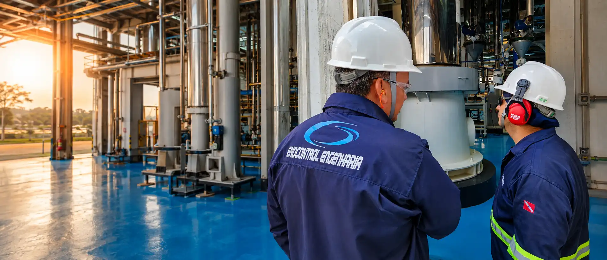

/ensaios_nao_destrutivos_04.webp)
AVANÇADO
Phased Array & TOFD
- Varredura setorial e focalização eletrônica
- Mapeamento volumétrico com múltiplos ângulos em tempo real
- Dimensionamento preciso de altura e comprimento de trincas
Inspeção precisa e avaliação de integridade sem danos ou alterações aos seus ativos críticos.
Oferecemos um conjunto completo de técnicas de Ensaios Não Destrutivos (ENDs) convencionais e avançados para inspeção e diagnóstico preciso da integridade operacional de equipamentos. Nossas metodologias permitem detectar descontinuidades e falhas potenciais sem causar danos às características originais dos materiais, garantindo segurança, confiabilidade e máxima disponibilidade operacional.
/ensaios_nao_destrutivos_01.webp)
/ensaios_nao_destrutivos_02.webp)
/ensaios_nao_destrutivos_03.webp)
Ensaios Não Destrutivos aplicados para detectar descontinuidades, mitigar riscos e assegurar a máxima confiabilidade operacional nos principais setores industriais.

Avaliação do grau de pites e danos localizados que ameaçam a integridade da parede.

Mapeamento e medição precisa de perda de metal em vasos, tubulações e tanques.

Detecção e dimensionamento de trincas, falta de fusão e descontinuidades superficiais e subsuperficiais.

Controle dimensional e análise de deformações geométricas em componentes industriais críticos.

Avaliação não destrutiva de componentes submetidos a ciclos severos de calor e exposição ao fogo.

Varredura avançada para detecção de HIC, SOHIC e blistering em aços operando em meio úmido de H2S.

Monitoramento preventivo em nós estruturais, eixos rotativos e componentes sujeitos a esforços dinâmicos.

Emissão rápida de laudos confiáveis para tomada de decisão segura sem paradas não planejadas.
Abordagem procedimental e técnica para inspeção de componentes críticos sem causar danos ou descontinuidades, assegurando máxima confiabilidade operacional.
Análise geométrica, tipo de material metálico, soldas, condições de operação e criticidade do ativo.
Definição da técnica ideal (Ultrassom, LP, PM, Radiografia, EV) conforme normas ASME, AWS e ISO.
Inspeção rigorosa realizada por profissionais qualificados com instrumentos devidamente calibrados.
Emissão de laudo detalhado com dimensionamento de indicações, registro fotográfico e parecer conclusivo.
Capturamos informações críticas em campo com tecnologia de ponta e protocolos confiáveis.
Nossos especialistas analisam o cenário com base em normas, histórico e dados operacionais.
Aplicamos metodologias avançadas para dimensionar descontinuidades e simular cenários técnicos.
Entregamos soluções práticas, laudos detalhados e planos priorizados de intervenção.
Há mais de 18 anos, entregando soluções de engenharia com segurança precisão e conformidade.
Chamar no WhatsApp